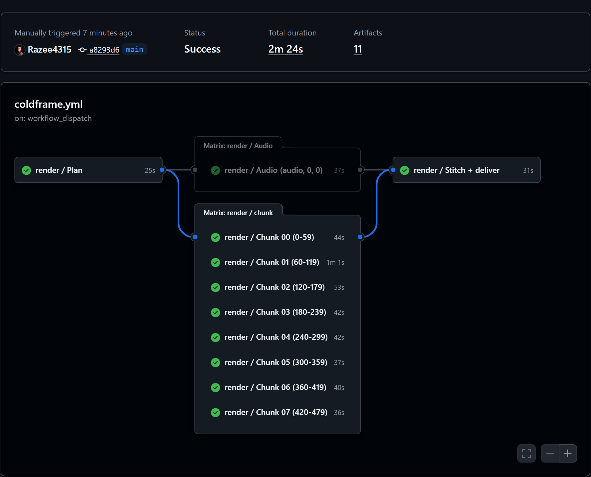

Render in the cloud.
Your laptop stays cold.
coldframe renders your Remotion videos on free cloud machines. It splits every video across parallel GitHub Actions runners, stitches the pieces losslessly and drops the MP4 in your Google Drive.
npx github:Razee4315/coldframe initThis video was rendered by coldframe: {{FRAMES}} frames on {{MACHINES}} machines in {{WALL}}, with no laptop involved.
One timeline in, one MP4 out. Many machines in between.
A render job normally runs on one computer, frame after frame. coldframe cuts the timeline into ranges and renders every range at the same time on its own runner.
Bundle and split
Bundles the project once, reads the composition's length and cuts it into equal frame ranges.
Render in parallel
Each runner renders its own range. The soundtrack renders once, in one piece, so no clicks at the seams.
Join and verify
Joins the chunks without re-encoding, adds the audio, then counts every frame. A wrong count fails the run.
Drop it in Drive
The MP4 lands in your Google Drive and as a download on the run. The CLI brings it to your PC.
ColdframePromo.mp4


Three steps. About five minutes.
You need a Remotion project on GitHub, Node 18+ and the GitHub CLI signed in with gh auth login.
Add the workflow
Run this in your Remotion project root. It adds .github/workflows/coldframe.yml, which calls coldframe's shared render workflow.
npx github:Razee4315/coldframe init
git add .github && git commit -m "Add coldframe" && git pushRender in the cloud
Starts the render, waits for it, and saves the MP4 to out/cloud/. You can also start it from the Actions tab.
npx github:Razee4315/coldframe render MyComp --chunks 8Optional: deliver to Google Drive
Sign in to Google once with rclone, then save the config as a repo secret. After that, every render is copied to My Drive/coldframe/.
# name the remote "gdrive" and pick scope 1 (full Drive access)
rclone config
gh secret set RCLONE_CONF < "$(rclone config file | tail -1)"GitHub Actions for speed. Colab for everything else.
GitHub Actions
A reusable workflow that renders on up to 20 runners at once. No browser tab, no babysitting.
- Free and unlimited on public repos, 2,000 min/month on private ones
- WebGL and three.js work on CPU runners (
--gl=swangle) - Frame-count check on every run, audio rendered in one pass
Google Colab
A notebook and a small helper that run renders in the background on a Colab runtime, then save to Drive.
- Claude Code can drive it through Google's Colab MCP server
- Every call returns in seconds, so it works within the MCP's 30 s timeout
- Sometimes a free T4 GPU, one click to save to Drive
# inside a Colab notebook (or sent by Claude through colab-mcp)
!curl -fsSL https://raw.githubusercontent.com/Razee4315/coldframe/main/colab/coldframe_colab.py -o coldframe_colab.py
import coldframe_colab as cf
cf.setup("you/your-video") # installs in the background
cf.render("MyComp") # renders in the background
cf.status() # poll until done
cf.to_drive("coldframe") # My Drive/coldframe/MyComp-….mp4| Your laptop | Google Colab (free) | coldframe on Actions | |
|---|---|---|---|
| CPU for the render | 4–8 cores | 2 vCPU | 8 × 4 vCPU (public repo) |
| Your machine while it renders | Hot, fans on, slow | Free, keep the tab open | Free, can be off |
| Demo on this page | {{LOCAL}} | single machine | {{WALL_SHORT}} |
| Where the MP4 ends up | Local disk | Google Drive | Drive, run download, out/cloud/ |
“Render it in the cloud.” That's the whole instruction.
coldframe ships a Claude Code skill and an MCP config. Claude edits your Remotion code, checks a few low-res frames locally, pushes, renders on Actions or Colab, then looks at the result before handing it over.
# in your Remotion repo: give Claude the skill and the Colab MCP server
mkdir -p .claude/skills/coldframe
curl -fsSL https://raw.githubusercontent.com/Razee4315/coldframe/main/.claude/skills/coldframe/SKILL.md -o .claude/skills/coldframe/SKILL.md
claude mcp add colab-mcp -- uvx git+https://github.com/googlecolab/colab-mcpFAQ
Is it really free?
On public repos, GitHub Actions minutes on standard runners are free. Private repos get 2,000 free minutes a month, and every chunk counts, so 8 chunks of 3 minutes use 24 minutes. Colab's free tier has no fixed price but limits usage and doesn't promise a GPU.
Will the joins between chunks show?
No. Remotion renders each frame on its own, so a frame looks the same whichever machine renders it. Chunks are joined without re-encoding, the soundtrack is rendered once for the whole video, and the run fails if the final frame count doesn't match.
Does three.js or WebGL work?
Yes. Runners have no GPU, so Chrome uses SwiftShader through --gl=swangle (the default). It's slower than a GPU, which is exactly why splitting the work across machines helps.
Why not Remotion Lambda?
Lambda is faster and made for production, but it needs an AWS account and costs money per render. coldframe is for people who want free cloud renders from a plain GitHub repo.
Where do my files go? Are they private?
Your project stays in your own repo. Use a private repo if the footage is confidential. Rendered chunks are temporary artifacts deleted after a day, and the final MP4 stays on the run (90 days by default) and in your own Drive.
What about Remotion's license?
coldframe is MIT licensed. Remotion has its own license: it's free for individuals and companies of up to 3 people. Larger companies need a company license.
Keep your laptop cold.
Add one workflow file and render your next video in the cloud.